Students performed 16S rRNA sequencing for their Winogradsky column perturbation experiments. We had a total of 26 samples that had sufficient quality DNA to sequence. The samples are split by the name of the file/sample, the group that performed the experiment, and the description of the perturbation that was done to that sample:
# Sample Group Description
Sample-1 Thermal Control
Sample-2 Thermal Heat_Shock
Sample-3 Thermal Preheat
Sample-7 Mudbucket Control
Sample-8 Mudbucket tetracycline_1
Sample-9 Mudbucket tetracycline_2
Sample-10 Mudbucket tetracycline_rifampicin
Sample-13 Green_Sludge tube1
Sample-14 Green_Sludge tube2
Sample-15 Green_Sludge tube3
Sample-16 Green_Sludge control
Sample-19 Saltbaes control
Sample-20 Saltbaes sample1
Sample-21 Saltbaes sample2
Sample-22 Saltbaes sample3
Sample-25 Microbiohomies sample1
Sample-26 Microbiohomies sample2
Sample-27 Microbiohomies control
Sample-28 Microbiohomies both
Sample-30 Microbiohomies no_description
Sample-31 Losegradsky_Column cpmtrp;
Sample-32 Losegradsky_Column malathion
Sample-33 Losegradsky_Column malathion
Sample-34 Losegradsky_Column malathion
Sample-35 negative_control negative_control
Sample-41 oil_wells controlWe applied a series of filtering and processing steps to these sequences to make sure we are working with high-quality data for the analysis. To see an overview of these steps, read through the Preprocessing Overview page.
To look at how the quality stats vary by sample, let’s look at the sample-codes-metadata.csv containing the information for each sample (as seen above) and the read-stats.txt file. The read-stats.txt file is a tab-delimited file that contains information for how many reads remained after each preprocessing step. Since this is a tab-delimited file, we can’t use read.csv or read_csv but rather the read_delim function. To read in the files:
metadata <- read.csv("raw_data/sample-codes-metadata")
stats <- read_delim("raw_data/reads-stats.txt", delim='\t', col_names = FALSE)Looking at the head() of the metadata file:
head(metadata)
Sample Group Description
1 Sample-1 Thermal Control
2 Sample-2 Thermal Heat_Shock
3 Sample-3 Thermal Preheat
4 Sample-7 Mudbucket Control
5 Sample-8 Mudbucket tetracycline_1
6 Sample-9 Mudbucket tetracycline_2Whereas the stats dataframe doesn’t have any column names. Let’s give it these column names:
colnames(stats) = c("Sample", "total_input_reads", "reads_passed_filtering", "R_reads_after_denoising", "F_reads_after_denoising", "merged_reads", "non_chimera_reads")And look at the head():
head(stats)
Sample total_input_rea… reads_passed_fi… R_reads_after_d… F_reads_after_d… merged_reads
<chr> <dbl> <dbl> <dbl> <dbl> <dbl>
1 Sampl… 600647 71945 70447 70779 58404
2 Sampl… 320 43 30 31 28
3 Sampl… 142096 8212 8149 8140 7833
4 Sampl… 188964 12931 12123 12278 10673
5 Sampl… 1536624 162939 160099 160925 148823
6 Sampl… 235898 18257 17006 17281 15116Notice that now the metadata and stats files have the same column name and column information in the Sample column. What if we want to combine these two datasets together so we don’t have to keep looking back and forth at the names of the samples and the read stats? We can do that with a function within dplyr called join. This function will take two dataframes, and if they have an identical column between the two of them, it merges them into one. Let’s call this new dataframe info and use the specifc join function left_join. This simply means that whichever dataframe you list first in the function, that dataframes information will be first, or on the “left” of the resulting, merged dataframe.
Reminder that you will first need to have either the full tidyverse or dplyr packages installed/loaded:
library(tidyverse)
library(dplyr)To join the two dataframes:
info = left_join(metadata, stats)Now we have our sample metadata and stats information all in one place.
Sample Group Description total_input_reads reads_passed_filtering R_reads_after_denoising F_reads_after_denoising merged_reads non_chimera_reads
Sample-1 Thermal Control 600647 71945 70447 70779 58404 58283
Sample-2 Thermal Heat_Shock 38495 4803 4408 4443 3146 3146
Sample-3 Thermal Preheat 1442786 204677 202301 202921 171843 170651
Sample-7 Mudbucket Control 1529 233 171 179 156 156
Sample-8 Mudbucket tetracycline_1 1140 136 89 101 80 80
Sample-9 Mudbucket tetracycline_2 179 25 11 11 8 8
Sample-10 Mudbucket tetracycline_rifampicin 320 43 30 31 28 28
Sample-13 Green_Sludge tube1 142096 8212 8149 8140 7833 7833
Sample-14 Green_Sludge tube2 188964 12931 12123 12278 10673 10573
Sample-15 Green_Sludge tube3 1536624 162939 160099 160925 148823 147639
Sample-16 Green_Sludge control 235898 18257 17006 17281 15116 14946
Sample-19 Saltbaes control 7450 454 323 293 245 245
Sample-20 Saltbaes sample1 2591598 190792 182335 184808 159728 148924
Sample-21 Saltbaes sample2 122093 9423 8861 8853 7779 7779
Sample-22 Saltbaes sample3 753351 51016 48698 48958 44672 44658
Sample-25 Microbiohomies sample1 7256 849 729 746 636 636
Sample-26 Microbiohomies sample2 2453 225 173 172 162 162
Sample-27 Microbiohomies control 7129 793 670 668 574 574
Sample-28 Microbiohomies both 7912 980 843 833 752 752
Sample-30 Microbiohomies no_description 925161 102466 101930 102024 74356 69828
Sample-31 Losegradsky_Column cpmtrp; 2398738 255566 250035 251638 231810 229782
Sample-32 Losegradsky_Column malathion 954 51 21 19 2 2
Sample-33 Losegradsky_Column malathion 3331 199 112 123 82 82
Sample-34 Losegradsky_Column malathion 3714 328 240 221 175 175
Sample-35 negative_control negative_control 50481 5749 5360 5218 4594 4594
Sample-41 oil_wells control 24413 2893 2613 2604 2454 2454If you can’t get the dataset to join, I have this cleaned version available for you to download. It is the winogradsky_sample_stats.csv file, and you can load it into R by running:
info <- read.csv("raw_data/winogradsky_sample_stats.csv")
head(info)Looking at this file, we can see the stats for each round of preprocessing for each sample:
# Sample Group Description total_input_reads reads_passed_filtering
1 Sample-1 Thermal Control 600647 71945
2 Sample-2 Thermal Heat_Shock 38495 4803
3 Sample-3 Thermal Preheat 1442786 204677
4 Sample-7 Mudbucket Control 1529 233
5 Sample-8 Mudbucket tetracycline_1 1140 136
6 Sample-9 Mudbucket tetracycline_2 179 25
R_reads_after_denoising F_reads_after_denoising merged_reads
1 70447 70779 58404
2 4408 4443 3146
3 202301 202921 171843
4 171 179 156
5 89 101 80
6 11 11 8
non_chimera_reads
1 58283
2 3146
3 170651
4 156
5 80
6 8Let’s say for now we just want to keep samples that have more than 1,000 reads in the final step. The final step of preprocessing was to remove chimeras, and therefore the non_chimera_reads column contains the final set of reads available for analysis. We can use filter to get rows of samples where this column is greater than 1,000. We can also use select with pipes %>% to only look at the Sample, Group, Description, and end reads columns (non_chimera_reads):
info %>%
filter(non_chimera_reads > 1000) %>%
select(Sample, Group, Description, non_chimera_reads)This gives us back 14 samples that passed this quality filtering threshold of at least 1,000 reads at the end of preprocessing:
Sample Group Description non_chimera_reads
1 Sample-1 Thermal Control 58283
2 Sample-2 Thermal Heat_Shock 3146
3 Sample-3 Thermal Preheat 170651
4 Sample-13 Green_Sludge tube1 7833
5 Sample-14 Green_Sludge tube2 10573
6 Sample-15 Green_Sludge tube3 147639
7 Sample-16 Green_Sludge control 14946
8 Sample-20 Saltbaes sample1 148924
9 Sample-21 Saltbaes sample2 7779
10 Sample-22 Saltbaes sample3 44658
11 Sample-30 Microbiohomies no_description 69828
12 Sample-31 Losegradsky_Column cpmtrp; 229782
13 Sample-35 negative_control negative_control 4594
14 Sample-41 oil_wells control 2454If we wanted to be even more stringent, we could use samples with at least 10,000 reads at the end of preprocessing:
info %>%
filter(non_chimera_reads > 10000) %>%
select(Sample, Group, Description, non_chimera_reads)Only 9 samples pass this threshold:
Sample Group Description non_chimera_reads
1 Sample-1 Thermal Control 58283
2 Sample-3 Thermal Preheat 170651
3 Sample-14 Green_Sludge tube2 10573
4 Sample-15 Green_Sludge tube3 147639
5 Sample-16 Green_Sludge control 14946
6 Sample-20 Saltbaes sample1 148924
7 Sample-22 Saltbaes sample3 44658
8 Sample-30 Microbiohomies no_description 69828
9 Sample-31 Losegradsky_Column cpmtrp; 229782Since the “Green Sludge” group had almost all of their samples contain 10,000 reads (the tube1 sample contains ~7,000 reads - which is close), I’m going to continue all examples in certain cases with those samples.
dplyrThe standard output of any 16S amplicon preprocessing pipeline are two files - a file containing the taxonomical classification for each OTU (operational taxonomic unit), and a file containing the abundane of each OTU in each sample. Let’s load those datasets into R. Note - these were saved as special kind of “R” files and have to be read in as such to preserve their structure before we convert them into dataframes.
# taxonomy file
taxas = readRDS("raw_data/winogradsky.taxon.table.rds")
# OTU file
otus = readRDS("raw_data/winogradsky.seq.tab.rds")If you look at the structure of each dataset using str you will see that these files contain lists. For example the structure of the taxonomy file gives you this:
str(taxas)
chr [1:2723, 1:7] "Bacteria" "Bacteria" "Bacteria" "Bacteria" "Bacteria" "Bacteria" ...
- attr(*, "dimnames")=List of 2
..$ : chr [1:2723] "otu_1" "otu_2" "otu_3" "otu_4" ...
..$ : chr [1:7] "Kingdom" "Phylum" "Class" "Order" ...This is a special format that will be important for working with the phyloseq and ampvis2 packages later on. For now, let’s convert them to dataframes so we can look at them with dplyr. We do this by assigning them as.data.frame.
# Taxonomy data frame
taxa_df <- as.data.frame(taxas)
# OTU data frame
otus_df <- as.data.frame(otus)Let’s start with the taxonomy file by looking at the head() of it:
head(taxa_df)
Kingdom Phylum Class Order Family Genus Species
<fct> <fct> <fct> <fct> <fct> <fct> <fct>
1 Bacteria Tenericutes Mollicutes Izimaplasmata… Izimaplasmatac… NA NA
2 Bacteria Firmicutes Clostridia Clostridiales Family_XI NA NA
3 Bacteria Firmicutes Bacilli Lactobacillal… Carnobacteriac… Trichococc… NA
4 Bacteria Firmicutes Clostridia Clostridiales Ruminococcaceae Ercella NA
5 Bacteria Proteobacte… Gammaproteobact… Chromatiales Chromatiaceae Allochroma… NA
6 Bacteria Firmicutes Clostridia Clostridiales Family_XIV NA NA
7 Bacteria Tenericutes Mollicutes EUB33-2 NA NA NA
8 Bacteria Firmicutes Clostridia Clostridiales Family_XII Fusibacter NA
9 Bacteria Firmicutes Erysipelotrichia Erysipelotric… Erysipelotrich… Erysipelot… NA
10 Bacteria Spirochaetes Spirochaetia Spirochaetales Spirochaetaceae Treponema_2 NA In this file, for every OTU we have a classification at the Kingdom, Phylum, Class, Order, Family, Genus, and Species levels. We can already see that some columns contain NA values. This is fine for working with downstream packages. As a reminder, it is rare to have exact species matches to a database because this is the most granular part of the classification. You should also take the species designation and any classification with a grain of salt, because these results are from what was a “best hit” compared to a reference database. And may not actually reflect what is in your samples.
For a refresher on what we learned about dplyr, you could look at how many OTUs were assigned at the species level by filtering out rows with NA values:
taxa_df %>%
filter(!is.na(Species))And it looks like 48 of our total OTUs were given species designations:
Kingdom Phylum Class Order Family Genus Species
<fct> <fct> <fct> <fct> <fct> <fct> <fct>
1 Bacteria Actinobact… Actinobact… Corynebacter… Corynebacteria… Corynebacteri… variabile
2 Bacteria Firmicutes Bacilli Bacillales Bacillaceae Bacillus cereus
3 Bacteria Firmicutes Clostridia Clostridiales Clostridiaceae… Anaerosolibac… carboniphi…
4 Bacteria Firmicutes Negativicu… Selenomonada… Acidaminococca… Phascolarctob… faecium
5 Bacteria Firmicutes Clostridia Clostridiales Peptostreptoco… Romboutsia litusebure…
6 Bacteria Firmicutes Clostridia Clostridiales Peptostreptoco… Romboutsia sedimentor…
7 Bacteria Firmicutes Clostridia Clostridiales Peptostreptoco… Acetoanaerobi… pronyense
8 Bacteria Firmicutes Clostridia Clostridiales Peptostreptoco… Terrisporobac… mayombei
9 Bacteria Firmicutes Clostridia Clostridiales Family_XI Sedimentibact… acidaminiv…
10 Bacteria Firmicutes Clostridia Clostridiales Family_XI Sedimentibact… saalensis
# … with 38 more rowsWhat if we wanted to quickly look at the distribution of different types of phyla across all our samples? We can do this by group_by on the “Phylum” column, and counting those groups. Since there are NAs in this dataset, first we have to filter them out to get an accurate count. We can arrange by largest to smallest by using the - sign, since the default behavior of count() is to list from smallest to largest:
taxa_df %>%
filter(!is.na(Phylum)) %>%
group_by(Phylum) %>%
summarize(count = n()) %>%
arrange(-count)And we get for the entire dataset (across all samples regardless of type of quality):
Phylum count
<fct> <int>
1 Firmicutes 883
2 Proteobacteria 466
3 Actinobacteria 281
4 Bacteroidetes 197
5 Planctomycetes 134
6 Tenericutes 87
7 Cyanobacteria 82
8 Chloroflexi 78
9 Verrucomicrobia 71
10 Acidobacteria 61
# … with 31 more rowsYou could repeat this for any group that you wanted to.
Challenge
For all OTUs that belong to the phylum Cyanobacteria, summarize the count of different Orders within that phylum. Remember to take out rows with missing values. You should get something that looks like:
Sample mean_counts min max
<chr> <dbl> <int> <int>
Order count
<fct> <int>
1 Vampirovibrionales 18
2 Chloroplast 15
3 Nostocales 11
4 Gastranaerophilales 10
5 Obscuribacterales 7
6 Synechococcales 5
7 Leptolyngbyales 2
8 Oxyphotobacteria_Incertae_Sedis 2You’ll notice after performing this exercise that “Chloroplast” is listed. Sometimes organelles like chloroplasts and mitochondira will end up in our dataset - but we don’t want them there. Luckily in our case, chloroplasts are defined at the Order level and Mitochondria at the Family level, so we can use that information to filter them out with != which stands for does not equal.
First we will want to keep the rownames, because this has important information about the classification for each OTU, which we will need later to match with the OTU counts data:
taxa_intm <- rownames_to_column(taxa_df, "otu")
cleaned_taxa <- taxa_intm %>%
filter(Order != "Chloroplast") %>%
filter(Family != "Mitochondria")We will save this cleaned_taxa dataframe and use it in a bit, it looks like:
otu Kingdom Phylum Class Order Family
1 otu_1 Bacteria Tenericutes Mollicutes Izimaplasmatales Izimaplasmataceae
2 otu_2 Bacteria Firmicutes Clostridia Clostridiales Family_XI
3 otu_3 Bacteria Firmicutes Bacilli Lactobacillales Carnobacteriaceae
4 otu_4 Bacteria Firmicutes Clostridia Clostridiales Ruminococcaceae
5 otu_5 Bacteria Proteobacteria Gammaproteobacteria Chromatiales Chromatiaceae
6 otu_6 Bacteria Firmicutes Clostridia Clostridiales Family_XIV
Genus Species
1 <NA> <NA>
2 <NA> <NA>
3 Trichococcus <NA>
4 Ercella <NA>
5 Allochromatium <NA>
6 <NA> <NA>Where we have manually taken out OTUs with any classification corresponding to Chloroplast or Mitochondria.
Now let’s look at the otu_df of counts of OTUs:
otu_1 otu_2 otu_3 otu_4 otu_5 otu_6 otu_7 otu_8 otu_9 otu_10 otu_11 otu_12 otu_13 otu_14
<int> <int> <int> <int> <int> <int> <int> <int> <int> <int> <int> <int> <int> <int>
1 3102 1801 552 988 2001 1161 450 307 405 3382 193 0 1679 544
2 13 0 0 0 0 7 0 0 0 0 0 0 0 0
3 0 6 227 0 0 151 0 0 0 0 0 0 0 0
4 1222 796 405 508 233 277 280 120 172 220 69 0 589 326
5 37731 11368 1909 4146 3834 3513 5139 3378 2696 2874 0 0 1410 2327
6 1246 891 610 672 388 313 921 134 350 147 0 0 520 865
7 62 30 24 19 0 10 0 21 4 21 0 0 0 0
8 321 248 51 133 0 168 51 10 132 0 0 333 129 30
9 20267 10643 6544 6712 5629 3178 1182 2458 2505 3576 0 0 2650 2195
10 574 267 234 263 376 200 279 113 169 168 0 0 163 185
# … with 16 more rows, and 2,709 more variables: otu_15 <int>, otu_16 <int>, otu_17 <int>,Each column is a different OTU, and each row is a different sample. So each cell of data are the counts corresponding to that OTU in a specific sample. We can look at the total counts of OTUs for each sample with rowSums:
rowSums(otus_df)
Sample-1 Sample-10 Sample-13 Sample-14 Sample-15 Sample-16 Sample-19 Sample-2 Sample-20
58283 28 7833 10573 147639 14946 245 3146 148924
Sample-21 Sample-22 Sample-25 Sample-26 Sample-27 Sample-28 Sample-3 Sample-30 Sample-31
7779 44658 636 162 574 752 170651 69828 229782
Sample-32 Sample-33 Sample-34 Sample-35 Sample-41 Sample-7 Sample-8 Sample-9
2 82 175 4594 2454 156 80 8 This corresponds to the OTUs that were identified for each sample, and is roughly comparable to the output of reads that we saw above in the stats file that were available at the end of preprocessing for analysis.
We can summarize these results with summary:
rowSums(otus_df) %>%
summary()
Min. 1st Qu. Median Mean 3rd Qu. Max.
2.0 165.2 2800.0 35538.1 37230.0 229782.0 Currently, the way this dataset is set up is a bit messy to look at, and doesn’t emplify “tidy” data. Each sample is an entire row, each column a separate OTU. Whereas with “tidy” data, each individual data entry should be given its’ own row. We can do this by a series of commands. First, we want to create an intermediate dataframe where the sample names are a new column. Currently they are row names and we can’t access them easily:
otu_intm <- rownames_to_column(otus_df, "Sample")Then, we can use the tidyr package within the tidyverse to reformat our table. If you couldn’t get the full tidyverse to install, you can install just tidyr with install.packages("tidyr") and then loading it with library(tidyr). We can use the function pivot_longer to reformat our dataframe to be in “long” format, instead of the current “wide” format. And inspect it with head() first to see what we did:
otu_intm %>%
pivot_longer(cols=-Sample, names_to="otu", values_to="raw_counts") %>%
head(n=20)Where now our OTU data looks like:
Sample otu raw_counts
<chr> <chr> <int>
1 Sample-1 otu_1 3102
2 Sample-1 otu_2 1801
3 Sample-1 otu_3 552
4 Sample-1 otu_4 988
5 Sample-1 otu_5 2001
6 Sample-1 otu_6 1161
7 Sample-1 otu_7 450
8 Sample-1 otu_8 307
9 Sample-1 otu_9 405
10 Sample-1 otu_10 3382
11 Sample-1 otu_11 193
12 Sample-1 otu_12 0
13 Sample-1 otu_13 1679
14 Sample-1 otu_14 544
15 Sample-1 otu_15 0
16 Sample-1 otu_16 965
17 Sample-1 otu_17 561
18 Sample-1 otu_18 1655
19 Sample-1 otu_19 543
20 Sample-1 otu_20 1255So for every OTU, we have the information for counts of that OTU in that sample, where we can clearly read each row the information that we want. Let’s save this as a new dataframe called otu_data:
otu_data <- otu_intm %>%
pivot_longer(cols=-Sample, names_to="otu", values_to="raw_counts") %>%Challenge
Now that we have our OTU data in a tidy format, let’s look at some summary statistics. Using the otu_data dataframe, create summary statistics for calculating the mean, minimum, and maxiumum number of counts for each sample. You should get something like:
Sample mean_counts min max
<chr> <dbl> <int> <int>
1 Sample-1 21.4 0 3382
2 Sample-10 0.0103 0 13
3 Sample-13 2.88 0 859
4 Sample-14 3.88 0 1222
5 Sample-15 54.2 0 37731
6 Sample-16 5.49 0 1246
7 Sample-19 0.0900 0 62
8 Sample-2 1.16 0 388
9 Sample-20 54.7 0 20267
10 Sample-21 2.86 0 1348Note that these are raw counts and are not the relative abundance of each OTU. For downstream analyses, we want to be working with relative abundances. This calculations comes from dividing the counts for each OTU in a sample by the total number of reads or counts in that sample. For example, we know that our samples have vastly varying amounts of reads:
otu_data %>%
group_by(Sample) %>%
summarize(sum=sum(raw_counts))
Sample sum
<chr> <int>
1 Sample-1 58283
2 Sample-10 28
3 Sample-13 7833
4 Sample-14 10573
5 Sample-15 147639
6 Sample-16 14946
7 Sample-19 245
8 Sample-2 3146
9 Sample-20 148924
10 Sample-21 7779
# … with 16 more rowsSo we need to take this information into account when calculating the relative abundance of each OTU depending on the sample. We can do this by adding a relative_abundance column with mutate.
otu_data %>%
group_by(Sample) %>%
mutate(relative_abundance = raw_counts / sum(raw_counts))First we grouped by each sample, so we are only looking at the sum of counts for each sample. Then we create a column called relative_abundance, where each raw count is divided by the sum of the raw counts within a sample. Let’s save this to a new dataframe called otu_table where we only have the columns for Sample, otu, and relative_abundance. We no longer need the raw counts.
otu_table <- otu_data %>%
group_by(Sample) %>%
mutate(relative_abundance = raw_counts / sum(raw_counts)) %>%
select(Sample, otu, relative_abundance)Now we have a table of relative abundances for each OTU. Now we want to pair this information with the taxonomy information, so we know for each OTU what its’ classification is. We can start to figure out how to do this by looking at the column names of each of the cleaned datasets we created:
colnames(cleaned_taxa)
[1] "otu" "Kingdom" "Phylum" "Class" "Order" "Family" "Genus" "Species"
colnames(otu_table)
[1] "Sample" "otu" "relative_abundance"
Both datasets have the column “otu”. We can merge them together with left_join just like we did with the sample data. We will name this new dataframe as merged:
merged <- left_join(otu_table, cleaned_taxa)This way, we have the taxonomical information repeated for each OTU in each sample so we can access the information for each sample easily. You will notice that for some of the OTUs there isn’t a taxonomical classification. Remember we removed OTUs that had either “Chloroplast” or “Mitochondria” in the classification? Now we need to remove them from the full dataset. We can do that by removing lines where the Kingdom contains NA values:
merged_clean <- merged %>%
filter(!is.na(Kingdom))Which looks like:
Sample otu relative_abundan… Kingdom Phylum Class Order Family Genus Species
<chr> <chr> <dbl> <fct> <fct> <fct> <fct> <fct> <fct> <fct>
1 Sample… otu_1 0.0532 Bacteria Teneri… Mollicu… Izimap… Izimapl… NA NA
2 Sample… otu_2 0.0309 Bacteria Firmic… Clostri… Clostr… Family_… NA NA
3 Sample… otu_3 0.00947 Bacteria Firmic… Bacilli Lactob… Carnoba… Tricho… NA
4 Sample… otu_4 0.0170 Bacteria Firmic… Clostri… Clostr… Ruminoc… Ercella NA
5 Sample… otu_5 0.0343 Bacteria Proteo… Gammapr… Chroma… Chromat… Alloch… NA
6 Sample… otu_6 0.0199 Bacteria Firmic… Clostri… Clostr… Family_… NA NA Now we have a cleaned set of the dataset where we have:
We should save this cleaned dataset in our cleaned_data folder:
write.csv(merged_clean, "cleaned_data/cleaned_merged_table.csv", quote = FALSE, row.names = FALSE)Challenge
Calculate the total relative abundance of each phyla by sample. Arrange in descending order.
You should get something that looks like:
Sample Phylum sum
<chr> <fct> <dbl>
1 Sample-32 Firmicutes 1
2 Sample-7 Tenericutes 0.603
3 Sample-19 Firmicutes 0.592
4 Sample-13 Firmicutes 0.579
5 Sample-27 Firmicutes 0.577
6 Sample-28 Firmicutes 0.565
7 Sample-30 Firmicutes 0.561
8 Sample-25 Firmicutes 0.519
9 Sample-21 Firmicutes 0.510
10 Sample-9 Tenericutes 0.5
# … with 822 more rowsIf you need a copy of this dataset, the file winogradsky_merged_clean_table.csv is this exact file we created. You can download it and read it into R with:
merged_clean <- read.csv("raw_data/winogradsky_merged_clean_table.csv")Now we are going to transition to looking at a specific set of samples. Since the Green_Sludge group had the highest amount of reads across all their samples, we will use their samples as an example. As a reminder, here are the 4 samples for the Green_Sludge group:
Sample Group Description
1 Sample-13 Green_Sludge tube1
2 Sample-14 Green_Sludge tube2
3 Sample-15 Green_Sludge tube3
4 Sample-16 Green_Sludge controlSo for our downstream analysis, we want to filter rows where the Sample is equal to Samples 13, 14, 15, and 16. We can do this using the OR “|” notation to create a new data frame green_sludge:
green_sludge <- merged_clean %>%
filter(Sample == 'Sample-13' | Sample == 'Sample-14' | Sample == 'Sample-15' | Sample == 'Sample-16')So now we have a new dataframe with just the information from the green sludge samples. We also want to add the extra information about each sample , which is stored in the info dataframe. We can subset the info dataframe just to have the descriptions for the green sludge samples with:
green_sludge_info <- info %>%
filter(Group == 'Green_Sludge') %>%
select(Sample, Description)And we can merge these descriptions with the OTU information to create a new dataframe green_sludge_table:
green_sludge_table <- left_join(green_sludge, green_sludge_info)So now we have the information for each sample. Now we can begin some exploratory analysis based on different OTU compositions across these samples that belong to the same experimental group. Let’s look at the most abundant classes across all 4 of these samples. First we will need to calculate the relative abundance of each class within each sample.
agg_abund <- green_sludge_table %>%
group_by(Sample, Class) %>%
summarize(agg_rel_abund=sum(relative_abundance)) %>%
ungroup() %>%
arrange(desc(agg_rel_abund))Make sure to save this intermediate dataframe as agg_abund as we will need it to find out what phyla are highly abundant across all these samples. This output looks like:
Sample Class agg_rel_abund
<fct> <fct> <dbl>
1 Sample-13 Bacilli 0.417
2 Sample-14 Clostridia 0.327
3 Sample-15 Clostridia 0.323
4 Sample-16 Clostridia 0.301
5 Sample-15 Mollicutes 0.276
6 Sample-13 Clostridia 0.161
7 Sample-14 Mollicutes 0.156
8 Sample-13 Bacteroidia 0.155
9 Sample-16 Mollicutes 0.148
10 Sample-13 Gammaproteobacteria 0.133
# … with 198 more rowsNow let’s look at the median of each class:
agg_abund %>%
group_by(Class) %>%
summarize(median=median(agg_rel_abund)) %>%
arrange(desc(median))This should output:
Class median
<fct> <dbl>
1 Clostridia 0.312
2 Mollicutes 0.152
3 Bacteroidia 0.0852
4 Gammaproteobacteria 0.0697
5 Bacilli 0.0450
6 Deltaproteobacteria 0.0367
7 Synergistia 0.0335
8 Erysipelotrichia 0.0249
9 Actinobacteria 0.0235
10 Spirochaetia 0.0163This gives us for all 4 samples, what the the median relative abundance is for each class. We can use this to look at the abundance patterns of these dominant class across our samples by working with the 5 most abundant to start with:
top_class <- agg_abund %>%
group_by(Class) %>%
summarize(median=median(agg_rel_abund)) %>%
arrange(desc(median)) %>%
top_n(5, median) %>%
pull(Class)What we’ve done here is select the top 5 most abundant phyla by median, and pulled the Phylum name so we can save this as a vector. Now we can filter from our larger table only the top phyla and look at their patterns across our samples:
top_results <- green_sludge_table %>%
filter(Class %in% top_class) %>%
select(Description, relative_abundance, Class)Now let’s look at these results in a plot. We will use ggplot2 as part of the tidyverse to plot our data. If you don’t have the entire tidyverse loaded, load ggplot2 with install.packages("ggplot2") and then library(ggplot2). Let’s make the plot:
top_results %>%
ggplot(aes(x=Class, y=relative_abundance, color=Sample)) + geom_boxplot()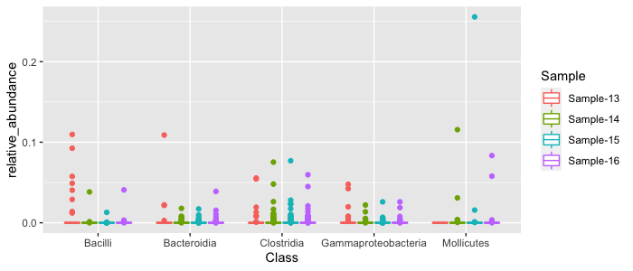
We can see some of the abundance patterns of the most abundant classes. Clostridia tend to be moderately abundant across all samples, whereas Bacilli are mostly abundant in Sample 13. Sometimes it is easier to view things on a log scale, since most of our data is concentrated towards the bottom of the y-axis:
top_results %>%
ggplot(aes(x=Class, y=relative_abundance, color=Sample)) + geom_boxplot() + scale_y_log10() 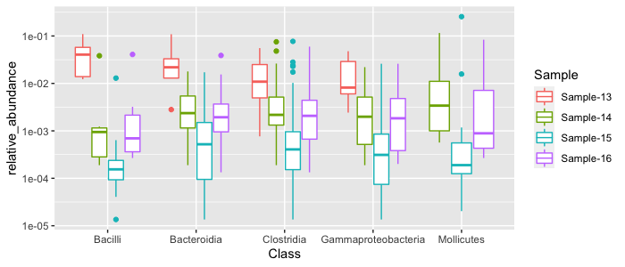
We can “pretty-fy” our plot with a couple changes:
top_results %>%
ggplot(aes(x=Class, y=relative_abundance, color=Sample)) + geom_boxplot() + scale_y_log10() + theme_classic() + labs(title="Class Changes in Green Sludge Samples", x=NULL, y="Relative Abundance")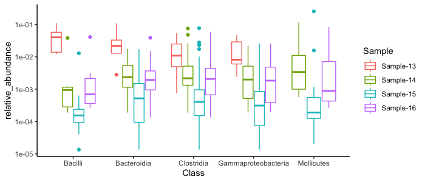
These are just a couple of examples of how you can analyze your amplicon data with dplyr. We mostly did some basic cleaning steps and exploratory analysis, but you could produce lots of different analyses based on what you are interested in, such as:
phyloseq packageNow we are going to explore our amplicon data with the phyloseq package. Phyloseq is a package specifically built to analyze 16S sequencing data and perform various analyses and visualizations that are not in dplyr or base R for example. First we have to create a phyloseq object. This takes three required inputs: a taxon table, an OTU table, and a metadata file. As you recall, we loaded the objects taxas and otus from the files I gave you. We will be working with those now and still specifically looking at the Green Sludge samples. We only have to adjust the otus data structure to get only the Green Sludge samples:
green_otus = otus[c("Sample-13", "Sample-14", "Sample-15", "Sample-16"),]Here we have to index like we did with vectors because these data structures are lists essentially. You can index lists just like you index vectors.
We can prepare our metadata file by following these steps:
green_samples <- as.data.frame(rownames(green_otus))
green_samples$description <- c("tube1", "tube2", "tube3", "control")
colnames(green_samples) <- c("sample", "description")
rownames(green_samples) <- rownames(green_otus)Now we are ready to create our phyloseq object. We will call it ps to keep things simple:
ps <- phyloseq(otu_table(green_otus, taxa_are_rows = FALSE), sample_data(green_samples), tax_table(taxas))Let’s explore our phyloseq object using some of the phyloseq functions, similar to how we explored our data using dplyr.
We can look at simple stats, with ntaxa, nsamples, and sample_names:
ntaxa(ps)
[1] 2723
nsamples(ps)
[1] 4
sample_names(ps)
[1] "Sample-13" "Sample-14" "Sample-15" "Sample-16"Since we added a “description” column to specify what the samples were, we can also look at the sample_variables:
sample_variables(ps)
[1] "sample" "description"So for each sample, we have the sample name and the description.
We can glimpse at the OTU table embedded in the ps object with otu_table and use similar indexing to the way we indexed our vectors and lists. Here we only have 4 samples, so we will look at the first 4 rows and the first 10 columns, where the columns are the different OTUs:
otu_table(ps)[1:4, 1:10]
otu_1 otu_2 otu_3 otu_4 otu_5 otu_6 otu_7 otu_8 otu_9 otu_10
Sample-13 0 6 227 0 0 151 0 0 0 0
Sample-14 1222 796 405 508 233 277 280 120 172 220
Sample-15 37731 11368 1909 4146 3834 3513 5139 3378 2696 2874
Sample-16 1246 891 610 672 388 313 921 134 350 147And the taxon table with tax_table using indexing, where rows are different taxa and columns are the taxonomic ranks:
tax_table(ps)[1:5, 1:3]
Kingdom Phylum Class
otu_1 "Bacteria" "Tenericutes" "Mollicutes"
otu_2 "Bacteria" "Firmicutes" "Clostridia"
otu_3 "Bacteria" "Firmicutes" "Bacilli"
otu_4 "Bacteria" "Firmicutes" "Clostridia"
otu_5 "Bacteria" "Proteobacteria" "Gammaproteobacteria"Now that we know how to work with phyloseq objects, we can start some basic analyses and visualizations. Let’s say we are interested in OTUs that belong to the phylum Actinobacteria. A reminder that we are again only working with raw counts and not relative abundances. We can make a subset of our phyloseq object with the function subset_taxa and get only Actinobacteria and plot those OTUs:
actinos <- subset_taxa(ps, Phylum == "Actinobacteria")
plot_bar(actinos)This plot isn’t very interesting, so instead we can color the OTUs by what Genus they belong to within Actinobacteria with:
plot_bar(actinos, fill="Genus")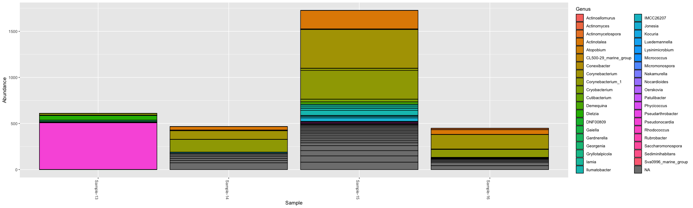
We can look at the breakdown of more specific groups using facets. Facets are part of ggplot2 that help us create separate, adjacent sub-plots. We can create a separate plot for each sample type, or the description that was given for these samples and look at groups of classes within the Actinobacteria and color by family:
plot_bar(actinos, "Class", fill="Family", facet_grid=~description)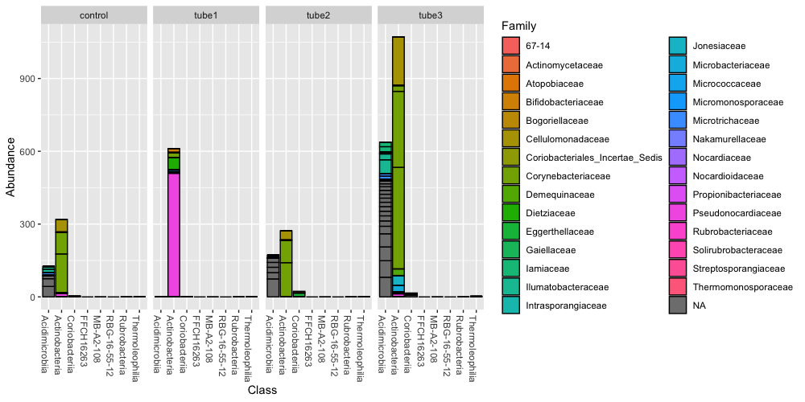
What if we want to represent this data but the counts are now calculated as relative abundance per sample? We can apply this with the phyloseq function transform_sample_counts:
ps_abundance <- transform_sample_counts(ps, function(x) x/sum(x))Let’s look at classes within the Bacteroidets of our new phyloseq object with calculated relative abundances.
bacteroidetes <- subset_taxa(ps_abundance, Phylum == "Bacteroidetes")
plot_bar(bacteroidetes, "Class", fill="Family", facet_grid=~description)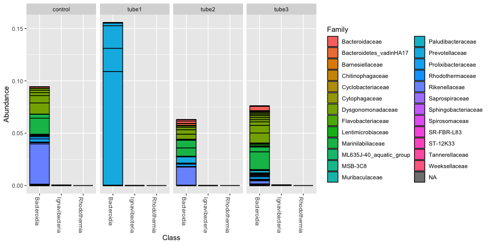
Now we have a figure that makes more sense to us in terms of relative abundance. In the tube1 sample, the Bacteroidia class makes up 15% of the community, and consists mostly of OTUs within the Prevotella.
Often times we will want to perform ordination statistics on our samples in which we plot a large number of OTUs or samples and express them as points on a 2D or 3D coordinate frame. We use this to look easily at differences between OTU composition across samples to see if we can decide if certain taxa are different between samples. Oftentimes in real amplicon analyses we will filter out low occurring OTUs because they might just actually be noise in our dataset. But since each group only sequenced 3-5 samples, we will keep all of our OTUs for the sake of completing an analysis.
Here we will create an ordination plot of distances between OTUs - which shows us the compositional dissimilarity between the OTUs.
plot_ordination(ps_abundance, ord, type="taxa", color="Phylum", title="taxa")This shows us that most of these OTUs have similar compositional or abundance patterns. We can also ordinate by sample to see how similar or dissimilar samples are in their OTU composition:
plot_ordination(ps_abundance, ord, type="sample", color="description") + geom_point(size=5)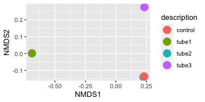
This type of visualization would be handy if you had multiple samples from the same kind of environment and wanted to compare them in a meta-analysis. We could do this with all of our samples. We could create a phyloseq object of the larger dataset by adjusting the metadata file:
info <- read.csv("raw_data/sample-codes-metadata.csv") %>% select(Sample, Description, Group)
rownames(info) <- info$Sample
ps.all <- phyloseq(otu_table(otus, taxa_are_rows = FALSE), sample_data(info), tax_table(taxas))
ps.all.abund <- transform_sample_counts(ps.all, function(x) x/sum(x))
ord.all <- ordinate(ps.all.abund, "NMDS", "bray")
plot_ordination(ps.all.abund, ord.all, type="Sample", color="Group") + geom_polygon(aes(fill=Group)) + geom_point(size=4)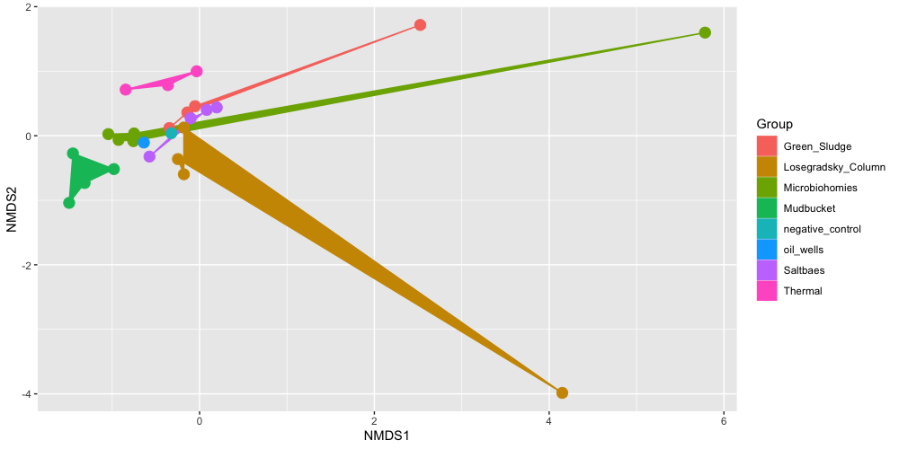
Here we can see how samples from the same experimental group sometimes cluster together, and sometimes they cluster with other groups. The Mudbucket and Thermal samples all cluster well with each other. The Losegradsky_Column samples seem to have some overlap with over groups, and each of these samples seems to be very different from each other comoposition wise.
You can look at more ordination methods and plots on the phyloseq tutorial page.
We may want to explore how diverse our communities are in each sample. A common metric is alpha diversity - this is the species diversity within a sample. This is also referred to as “richness”, or the total number of different species/OTUs/taxa in a sample or environment. We can calculate a common alpha diversity metric using the Shannon method on all of our samples:
plot_richness(ps.all, color="Group", measures=c("Shannon"))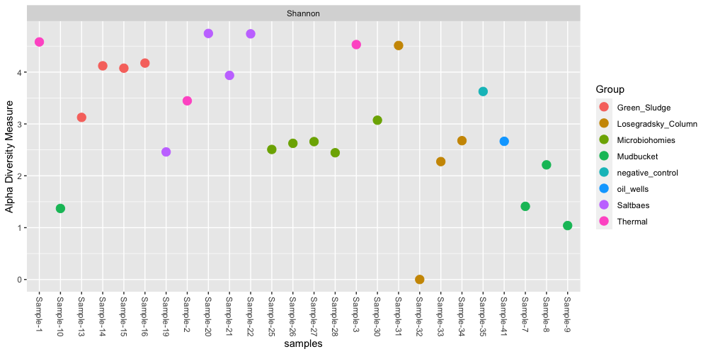
These are some of the basic analyses and visualizations that we can perform in phyloseq. You can choose to subset the full dataset by specific samples to further explore, or perform meta-analyses between sets of samples.
ampvis2 packageLastly, a really nice package that has become popular in amplicon anlayses recently is the ampvis2 package. This package was created by Dr. Mads Albertsen at the Center for Microbial Communities at Aalborg University in Denmark. Dr. Albertsen also studies microbial communities of wastewater treatment systems like myself, and that’s how I mostly know about this package. I’ve used it myself to create heatmaps of 16S time-series of lab-scale wastewater bioreactors to study the main microorganisms involved in removing phosphorus. This is a figure I created recently:
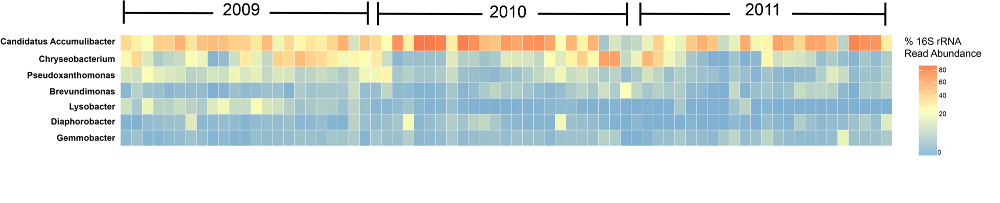
I edited the legend and the year labels in Illustrator, but the heatmap itself is from using the same preprocessing steps as our Winogradsky samples and the ampvis2 package.
To create an ampvis2 object, we can use our pre-existing phyloseq object with some tweaks. To do this, we need to do a couple steps that requires the package devtools. This basically allows us to access open-source tools that people have already made that are available on Github - where code is stored online.
library(devtools)
devtools::source_gist("8d0ca4206a66be7ff6d76fc4ab8e66c6")Once you have devtools and you were able to source this confusing “gist”, we can use the function phyloseq_to_ampvis2 to convert our phyloseq object to an ampvis2 object. If these steps do not work - don’t worry. There are plenty of ways to analyze the data within phyloseq. There are even tutorials on how to create heatmaps in phyloseq, this is just another way to analyze the data.
If that is all working, we can create our ampvis2 object with:
ampvis2_obj <- phyloseq_to_ampvis2(ps.all)What’s nice about the ampvis2 package is it already performs normalization by calculating relative abundance when we load the object, and do not have to re-calculate it like we did with the phyloseq object.
With the function amp_heatmap we can generate lots of different heatmaps. Lets look at the top 4 most abundant phyla across all of our samples:
amp_heatmap(ampvis2_obj, tax_aggregate = "Phylum", tax_show=4, plot_colorscale = "sqrt", plot_values = FALSE) + theme(axis.text.y = element_text(size=8), legend.position="right")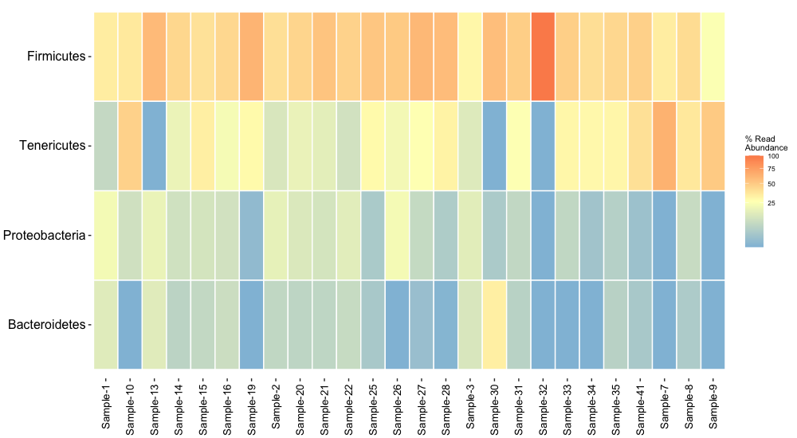
We can also subset certain groups of samples within the ampvis2 package. Let’s look further at the Mudbucket samples. Let’s create a heatmap showing the top 25 most abundant genera and also show their phyla names:
subset <- amp_subset_samples(ampvis2_obj, Group %in% c("Mudbucket"))
amp_heatmap(subset, tax_aggregate = "Genus", tax_add = "Phylum", tax_show = 25, plot_colorscale = "sqrt", plot_values = FALSE)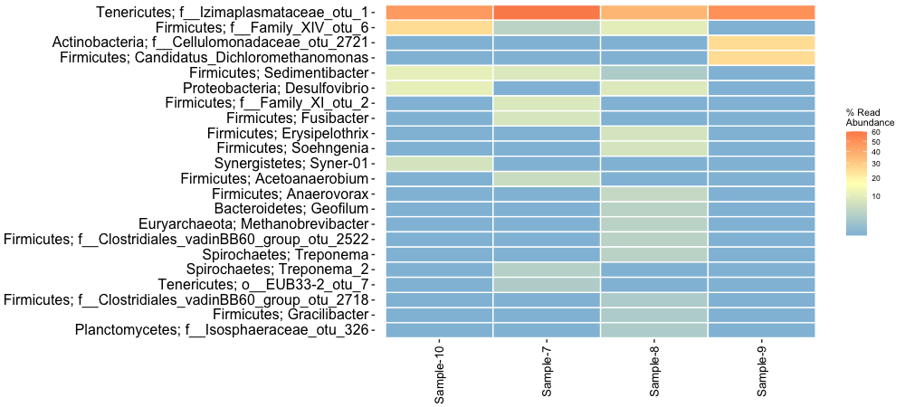
You could also look at a boxplot of the mean read abundances for all samples:
amp_boxplot(subset)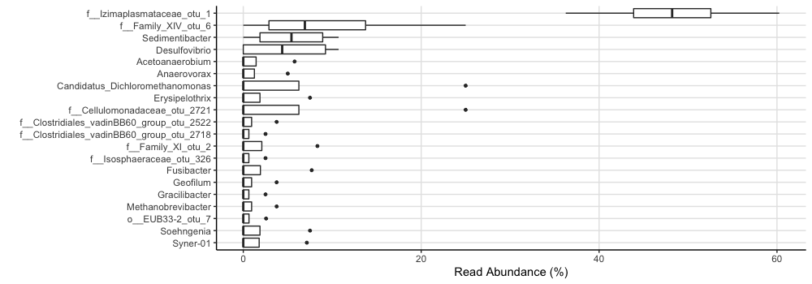
Overall, we’ve gone through:
dplyrphyloseqampvis2But also, you’ve learned a lot about working with data in R as a whole. Most of the dplyr commands we covered you could apply to any dataset to select certain columns, filter by specific criteria and perform analyses. Oftentimes you have multiple datasets you want to join together to perform anlayses on, and you can do that with the left_join function. Even using specific packages, you’ve learned by now that the most difficult part of bioinformatics is usually installation. If a developer includes quality documentation and help guides, it can be quick to go from raw data to different kinds of results.
Elizabeth McDaniel, 2020. License.